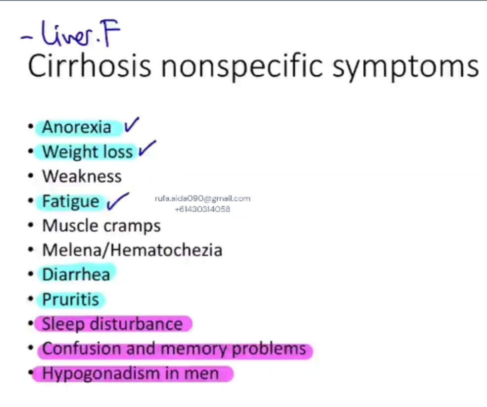
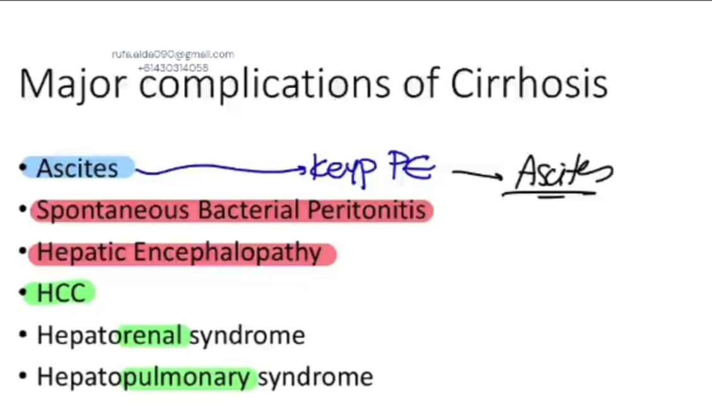
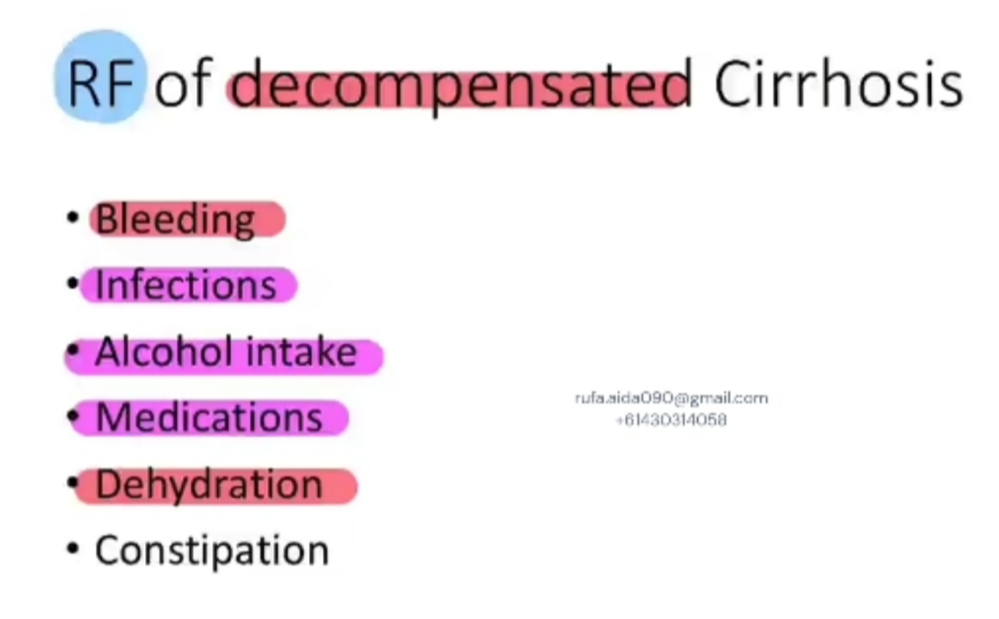
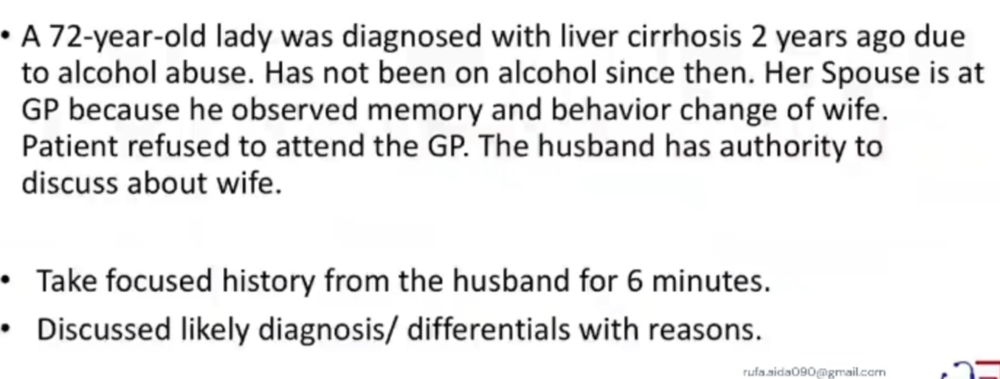
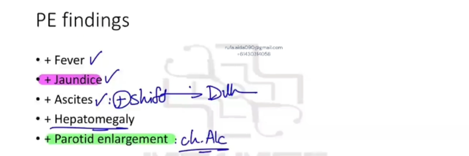

Chronic Liver Disease: Hepatic Encephalopathy and Spontaneous Bacterial Peritonitis (revision set)
Source: Dr. Amir workshop — GIT 2026 / class 5 liver cases (Aug 2026 drop) · Specialty: gastroenterology
Background: Cirrhosis and Decompensation
Chronic liver disease/cirrhosis causes non-specific symptoms: anorexia, weight loss, weakness, fatigue, muscle cramps, melaena/haematochezia.
Hepatic encephalopathy: sleep disturbance (early), memory problems, confusion, slurred speech, ataxia, focal neurological deficit (late).
Major complications: ascites, spontaneous bacterial peritonitis, hepatic encephalopathy, hepatocellular carcinoma, hepatorenal syndrome, hepatopulmonary syndrome.
Precipitants of decompensation: constipation, infection, GI bleeding, alcohol, new medications, electrolyte disturbance.
Case 1 - Stem (Hepatic Encephalopathy, collateral history)
A 72-year-old woman was diagnosed with cirrhosis 2 years ago due to alcohol use and reportedly stopped drinking then. Her husband attends the GP concerned about her memory and behaviour change. The patient refused to attend; the husband has authority to discuss her care.
Task: Take a focused history from the husband for 6 minutes; discuss the likely diagnosis and differentials with reasons.
Given findings: ascites; forgetfulness; daytime sleepiness; intermittent confusion.
Case 1 - History Framework
Step 1: explore the complaint (nature of memory/behaviour change), timing and progression, alleviating/aggravating factors.
Step 2 - CLD history: treatment, compliance, GP/specialist follow-up.
Step 3 - Complications screen: jaundice, itch, bruising, tiredness, muscle cramps, haematemesis/melaena (oesophageal varices), libido; encephalopathy (memory, sleep, weakness/numbness, balance, vision); SBP (abdominal pain, nausea/vomiting, fever/chills); malignancy (weight loss, appetite, lumps); hepatorenal (reduced urine); hepatopulmonary (SOB, cough).
Step 4 - Precipitants: ongoing/hidden alcohol, new medications, recent infection, constipation.
Step 5 - Geriatric screen: falls, home support, diet, ADLs, mood.
Case 1 - Diagnosis and Differentials
Diagnosis: hepatic encephalopathy from cirrhosis/liver failure, likely precipitated by resumed alcohol.
Differentials: other cirrhosis complications (SBP with sepsis, HCC, hepatorenal/hepatopulmonary syndrome); delirium causes (sepsis, medications/withdrawal, brain tumour, Alzheimer/Lewy body dementia, electrolyte imbalance, glucose disturbance).
Case 2 - Decompensated Cirrhosis / SBP
Opening: leg swelling, bruising, increasing abdominal girth, and resumed alcohol (about five glasses of wine) over six months.
Explore: leg swelling (timing, progression, gravity dependence, uni-/bilateral, extent); bruising (spontaneous vs traumatic). Then CLD history, complications and precipitants.
Explaining bloods: low albumin (reduced protein synthesis), low platelets (reduced clotting), high INR (reduced clotting factors), low Hb, high WBC/neutrophils (bacterial infection), raised liver enzymes (inflammation).
Diagnosis: spontaneous bacterial peritonitis - infection of ascitic fluid in cirrhosis - supported by fever, raised neutrophils, ascites and recent alcohol.
Case Figures








🔬 Expert Review & Enhancements
Reviewed by: history-taking-expert (Australian clinical supervisor) · fact-checked against the irStudy medical textbook RAG index.
✏️ Corrections
Correct term is 'oesophageal varices' - a key source of decompensating GI haemorrhage in cirrhosis.
SBP is confirmed by diagnostic paracentesis showing ascitic neutrophils at least 250 cells/mm3. Per Therapeutic Guidelines, treat empirically with IV ceftriaxone or cefotaxime plus IV albumin; give albumin to reduce hepatorenal syndrome. Add secondary prophylaxis (e.g. norfloxacin) after an SBP episode.
Tailor the history to the presenting complaint; the memory/behaviour prompts are a copy-paste artifact and should be replaced with questions relevant to ascites, oedema and coagulopathy.
⭐ Suggested Enhancements
🏷️ Metadata
📚 Reference Citations (RAG)
John Murtagh General Practice, 8th Edition.pdf p.3653 qdrant:1574d4f1-6c9a-4c6d-a14c-0f0e295a92dd
John Murtagh General Practice, 8th Edition.pdf p.3549 qdrant:41da6026-7c67-4c28-895e-1cb8cda72e56
John Murtagh General Practice, 8th Edition.pdf p.3592 qdrant:408e78a3-23ec-42a9-9e6b-42a72e286605